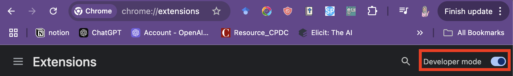
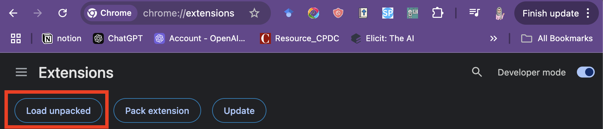
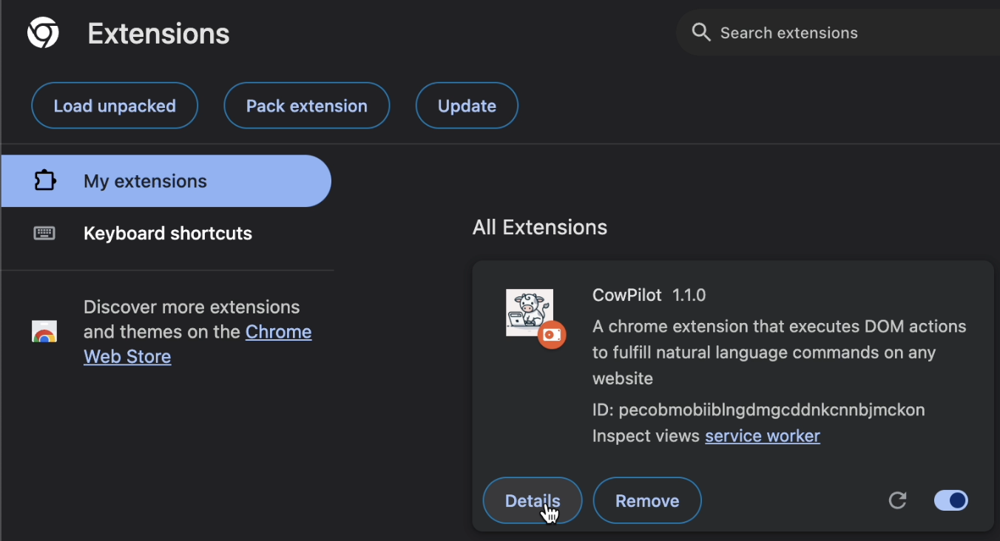
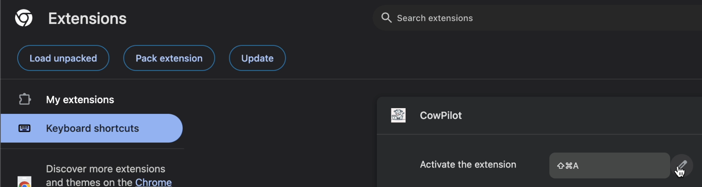
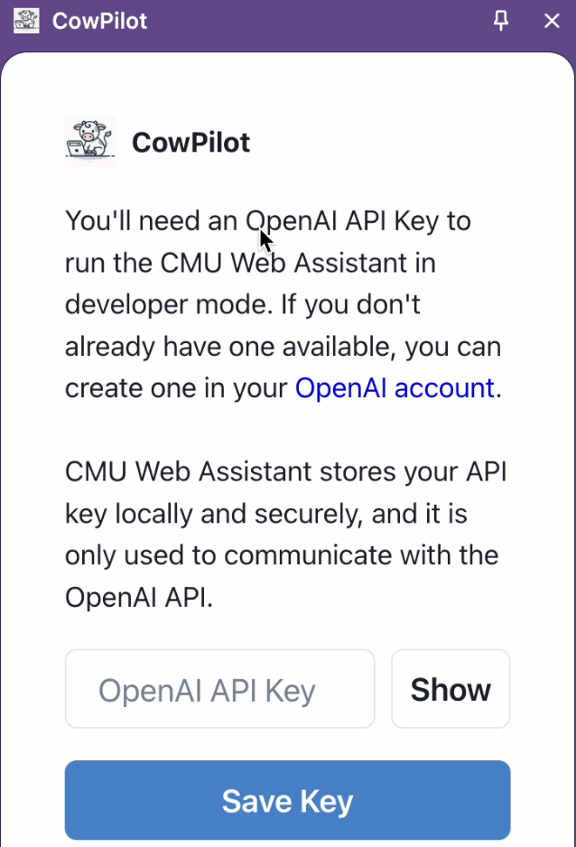
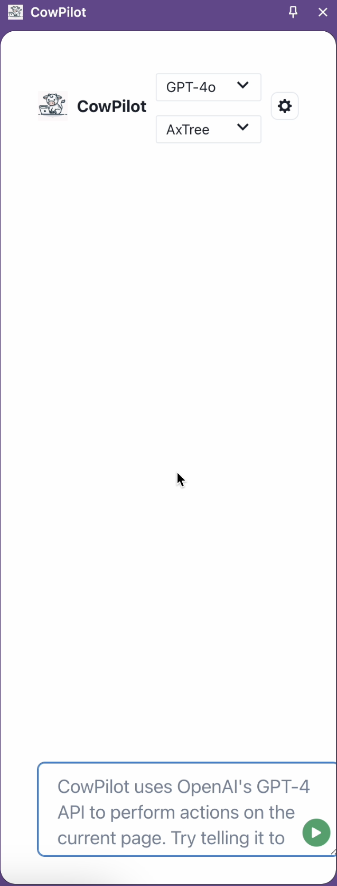
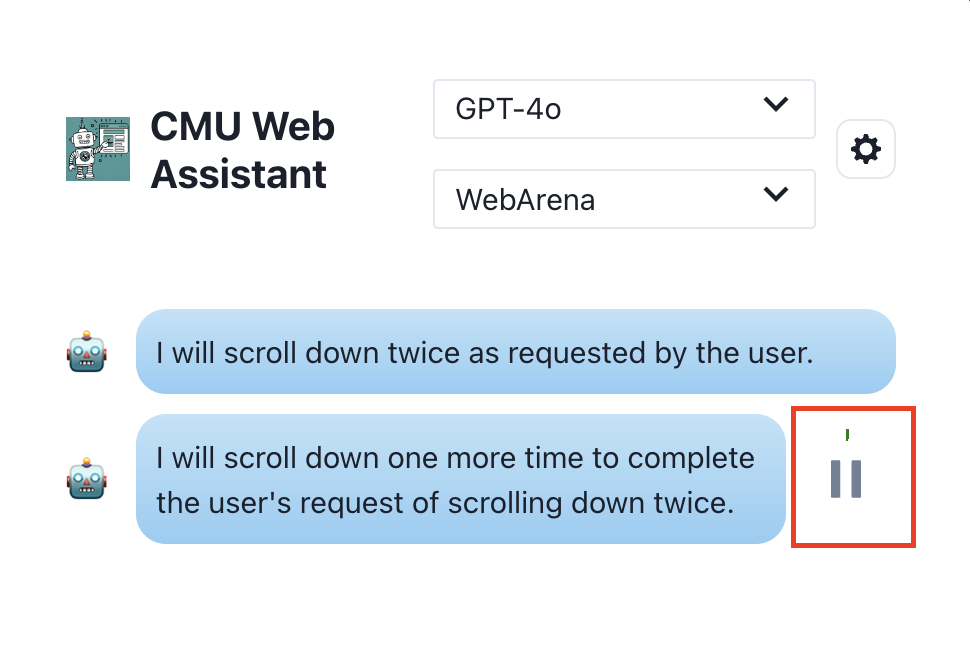
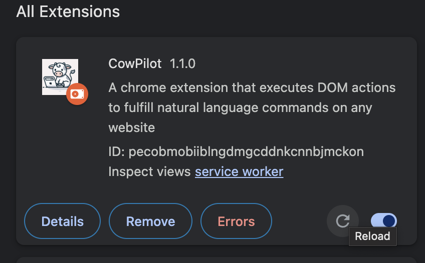
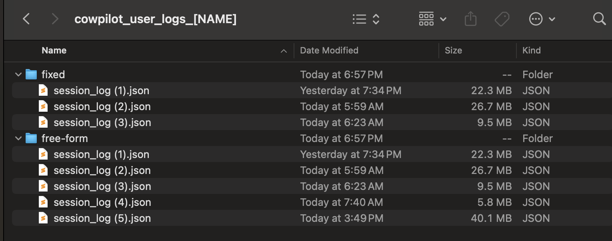

Documentation of CowPilot User Study
Faria Huq
Hello! 👋
Requirements
Installation
API Key setup
Quick Start
Limitations
Troubleshooting
Annotation Guideline
Hello! 👋
Welcome to our study! This documentation will guide you through installing and using our Chrome extension. If you have any particular questions, feel free to jump to troubleshooting at the bottom of the documentation. Leave a question or contact Faria for assistance.
Requirements
- Make sure to update your Chrome browser to the latest version.
- Browse chrome://extensions and enable ‘Developer Mode’

Installation
- Download and unzip the file on your desktop.
- Browse chrome://extensions and click on ‘Load unpacked’

- On the popup window, browse the folder where you unzipped the extension and click ‘Select’

- You will now see a new extension showing in the panel.

- And you are done installing it!
- To open the extension easily, you can also enable keyboard shortcuts by visiting ‘Keyboard shortcuts’ and setting a shortcut for activation. Here, I set it to `Ctrl+Shift+A`, which opens the extension every time I press it.

API Key setup
- When you open the extension for the first time, it will ask you for your OpenAI API key. Input it in the text field and press ‘Save Key.’ (We do not track your API key; it is only stored locally for action generation.) For the study, we will provide you the API Key: sk-4RscEz73zrw39ME1edhFJQ

- You are now ready to start using the extension!

Quick Start
- Please note: When you are installing the extension for the first time, the initial execution may not always work. If it does not, simply close the plugin, reload the webpage, and then reopen the plugin.
- Open the extension
- Type in your task goal and click on the start task button.
- The agent will now start executing the task.
- You can pause/stop/abort the task.
- Pause: To pause the agent execution and intervene, take the following steps:
- Pause the agent: click the pause button beside the latest action to pause the execution.

- Continue the interaction you would like to do in the website
- When you are ready to give the control back to the agent, click on the ‘resume’ button
- Successfully stop the task: By clicking on the stop button, you can mark the task as a successful task completion.
- Unsuccessful/ Failure/ Abort: By clicking the abort button, you can mark the task as incomplete/unsuccessful.
- We recommend that you intervene at least once before marking a task as unsuccessful.
- If the task is doable for you to finish, we strongly recommend that you complete the rest of the actions instead of aborting.
- You should abort the task only when the task is impossible or you do not know how to complete the task yourself.
Limitations
- The agent may not always function perfectly and can be prone to errors. If an action takes too long (>30 seconds) to execute, feel free to pause/halt the execution and attempt it yourself.
- The agent's responses may vary across different executions.
- The agent might not always provide correct answers. If that happens, you are encouraged to intervene to help correct any mistakes.
- The agent may not work on a few websites such as Google Docs, Walmart, Chrome Settings, and Chrome extension pages.
Troubleshooting
- If the agent takes longer than normal to resume or to show the completion summary, this is normal; please be patient.
- We recommend reloading the desired webpage before you initiate a new task with the agent.
- Many errors stem from data processing issues and can often be resolved by rerunning the task. Reload the webpage and open the Chrome extension again if you encounter problems.
- If the agent stops working, go to chrome://extensions and ‘reload’ the extension to restart it.

- You may encounter a couple of warnings that are safe to ignore, such as:
- WebSocket connection to 'ws://localhost:3001/ws' failed
- Warning during compilation by Sass
If you have experience troubleshooting Chrome extensions, you can check the ‘Inspect’ panel for more details on any errors. Please don’t hesitate to reach out to Faria if you have questions or need assistance.
Annotation Guideline
- If you have experience troubleshooting Chrome extensions, you can check the ‘Inspect’ panel for more details on any errors. Please don’t hesitate to reach out to Faria if you have questions or need assistance.
- You need to complete:
- 10 fixed tasks: Complete the tasks listed here: https://oaishi.github.io/static/fixed_task.html
- 10 freeform tasks of your choice:
- Choose tasks of your preference and execute them with CowPilot.
- Be as detailed as possible in your descriptions.
- Some example tasks:
- In case a task fails, close the plugin and try to refresh the page. Then try again. If it still fails, try a different task. If multiple tasks do not progress at all, pick a new website or contact Faria. Known website not supported by CowPilot:
- For each of the 20 tasks you are annotating, please make sure to download the log file from the summary. This step is crucial to qualify for reimbursement. We will track your log files to ensure that the annotation is of good quality. Here’s how we recommend to save the log files:
- Create a folder named ‘cowpilot_user_logs_[your name]’
- Subfolder ‘fixed’
- 10 JSON files for session logs
- Subfolder ‘free-form’
- 10 JSON files for session logs

- We would also appreciate it if you are comfortable with recording your annotation and sharing the recorded video with us. This step is optional but highly appreciated.
- Once you have completed the annotation tasks, please complete the post-study survey and share the log files with us to be eligible for reimbursement. Post-survey link: https://forms.gle/Fn3biyGzw66SF9vm9